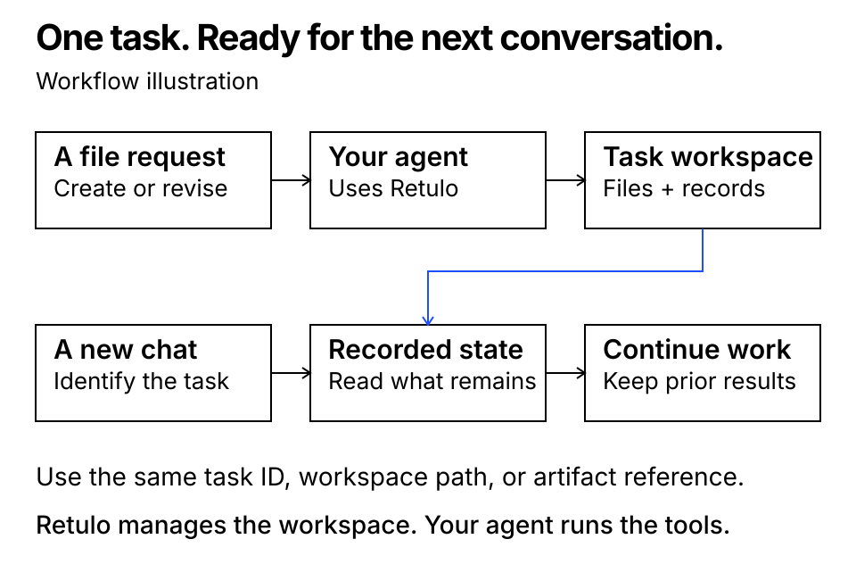
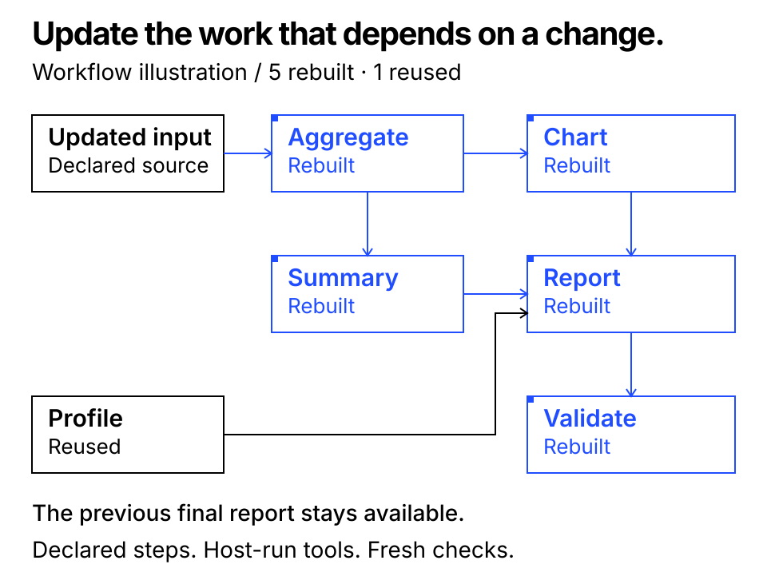

Use an ordinary request
After setup and trust, the connected agent can follow the same file-work procedure while handling your usual requests. Questions and planning alone do not create a workspace.
PREVIEW RELEASE0.4.0rc2
Retulo gives AI agents a dedicated local workspace for file-producing work. It keeps source material, output versions, decisions, and checks together. Identify the same task in a new conversation to continue from its recorded state.
01 / THE FOUNDATION
A task is more than its latest file. Retulo keeps source material, output history, decisions, and checks organized for your agent.
After setup and trust, the connected agent can follow the same file-work procedure while handling your usual requests. Questions and planning alone do not create a workspace.
A stable task ID and workspace connect the work across conversations. Provide the task, workspace path, or an actual artifact reference when continuing.
Reserve output destinations, register saved files, and retain managed previous outputs. Existing code repositories stay in place.
Keep a concise current guide with decisions, remaining work, checks, and approvals. A saved file, checked content, and user approval remain distinct.

.venv/bin/python scripts/demo_continuity.py --output-dir /tmp/retulo-continuity-demoUse a new, empty output directory. Separate CLI processes create a guide, inspect the same task again, and save a second version while preserving the source and first result. This checks task continuity; it is not a test of a new Codex conversation.
02 / HOW IT WORKS
The current agent interprets your request and makes the goal and completion criteria explicit.
The agent starts a workspace or identifies the existing one before producing files.
Retulo records versions and file integrity. The agent or user evaluates content and records the result.
Read the short current guide, then retrieve detailed records when the next step needs them.
The core runs locally. It does not launch models or agents, execute recipe commands, watch folders, or publish results.
03 / QUICK START
Unpack the source archive and open a terminal in its project directory. This preview uses source installation.
python3 -m venv .venv
.venv/bin/python -m pip install -r requirements.lock
.venv/bin/python -m pip install --no-deps -e .
.venv/bin/retulo --helpThe final command should display Retulo’s available commands.
.venv/bin/python scripts/install_codex.py
.venv/bin/python scripts/install_codex.py --applyThe first command previews changes. Apply them when ready, then review and trust the exact hooks in Codex. Keep this source checkout in place. Existing MCP connections are not restarted automatically.
Create a visitor guide as a Markdown file. Preserve the source material.
Continue this guide in the same workspace. Add a contact section and keep the previous version.
04 / UPDATE AND REPEAT
For declared workflows, Retulo connects inputs, production steps, and exact outputs. The agent can see which steps need work after an input changes.
The host agent reruns the necessary tools while earlier final files remain preserved. Undeclared dependencies are not automatically discovered.
Use versioned inputs and parameters to create a new task. Its checks start fresh; previous approvals and verdicts are not copied.

.venv/bin/python scripts/demo_incremental.py --output-dir /tmp/retulo-report-demoChoose a new, empty output directory. The example creates an HTML report from the checkout’s inventory, updates affected steps, preserves the earlier report, saves a recipe, and creates a new report from another inventory. It makes no model calls and changes no global installation settings.
05 / DOCUMENTATION
Retulo records managed tasks, files, and progress. To continue across conversations, identify the same task or workspace. The core does not reconstruct conversations it has not received.
The current agent interprets the request and runs its tools. Retulo manages the workspace and records file integrity, checks, and approvals. Recorded checks do not guarantee content quality.
The qualified target is macOS with a local filesystem, using Python 3.11 or later. Other operating systems, network storage, multiple hosts, and other clients need separate validation.
Install Python 3.11+ and the package dependencies, then configure local workspace and source roots. Use the CLI or connect the MCP server to your existing agent. Codex guidance and hooks have a separate installer; Retulo adds no AI runtime or background service.
06 / HELP AND CONTRIBUTIONS
Start with the guides, share a minimal reproduction for a bug, or describe the work a proposed feature should help you complete.
Preview release. Install from the GitHub source checkout, and read the qualification record for tested environments and current limits.